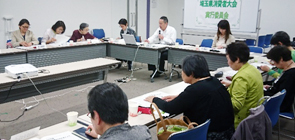

|
|
第54回埼玉県消費者大会実行委員会  4月22日（金）13時30分より、浦和コミュニティセンター第15集会室にて、第54回埼玉県消費者大会第1回実行委員会が開催され、20人(14団体)事務局3人が出席しました。 【議題】 1. 岩岡事務局長から 2. 第54回消費者大会の運営体制と日程 （1）運営体制 実行委員長 柿沼トミ子さん(埼玉県地域婦人会連合会) 副実行委員長 廣田美子さん(さいたま市消費者団体連絡会) 事務局長 岩岡宏保さん(埼玉県消費者団体連絡会代表幹事) （2）日程と会場 10月9日（火）埼玉会館 3. 第53回消費者大会決算報告・第54回消費者大会分担金・予算 説明し、意見交換の上で確認しました。 4. 消費者大会のテーマや課題など 大会内容について意見交換をおこないました 事務局長より、私たち消費者をとりまく社会状況・埼玉県の状況について報告をおこない、大会の柱となるテーマ・スローガンや、全体会記念講演・分科会・プレ学習会で学ぶべきことについて、意見交換をおこない、以下確認しました。
5. 消費者大会に向けた検討スケジュールを確認しました 消費者大会に向けた実行委員会開催のスケジュール、各回実行委員会で話し合う内容について確認しました。 6. 市町村消費者行政調査実施について 今年度も市町村消費者行政調査を実行委員会としておこなうことを提案し、確認しました。また、全国消団連から全国で統一した質問事項を設けることについて呼びかけがあり、埼玉県の調査にも一部取り入れることをあわせて確認しました。実施後の市町村訪問などの取り組みについては、あらためて提案することになりました。 7. お知らせ
|